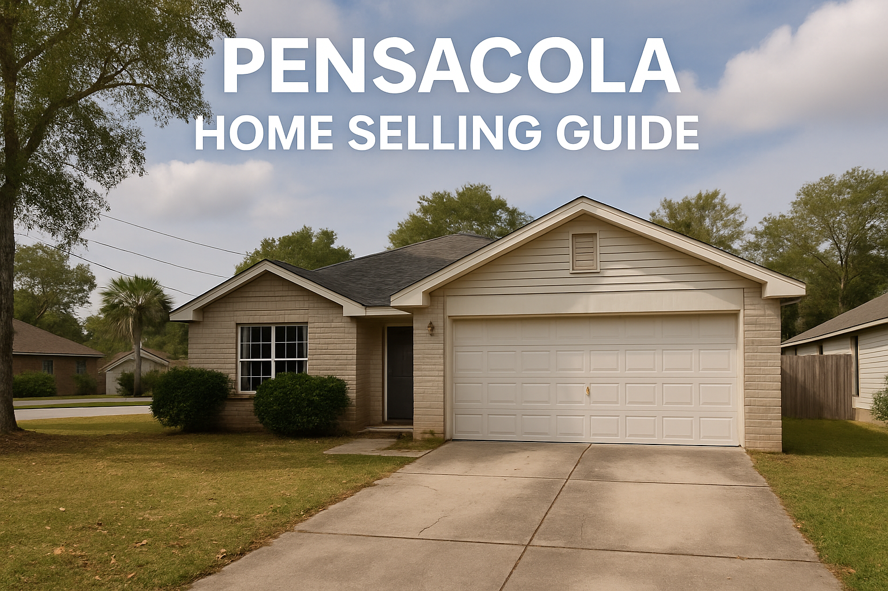

Pensacola sellers with repair pressure
Older homes, deferred maintenance, and as-is properties in Pensacola often make owners question whether repairing first is worth the extra time and cost.
Pensacola, Florida
Pensacola owners often want a more direct sale path when storm-related wear, repairs, inherited property, or a move deadline make listing less practical.
City-Level Selling Help
Most sellers looking for a faster sale in Pensacola are not casually browsing. They are usually trying to solve a timeline problem, avoid repair spending, reduce holding costs, or move an inherited or rental property without adding another long prep cycle.
This page is built to make that search more useful by connecting city-level context with the Escambia County pages and local seller-situation pages that sit underneath it.
A traditional listing can still work in the right case. The real question is whether the house, the timing, and the ownership details fit a full market process or whether a direct sale is the cleaner move.
Escambia County
Homeowners in Pensacola usually begin searching for a faster sale because something has changed around the property, the timeline, or the amount of work they are willing to take on before closing.
In Escambia County, sellers are often dealing with distance ownership, storm wear, inherited property, and sellers who want a more direct exit. Pensacola sellers also compare options with nearby pages like North Florida Hub, Tallahassee, especially when they are weighing county-level timing against what is happening in nearby submarkets.
That is why city-level guidance matters here. The right next step usually depends on whether the seller is facing repair pressure, an inherited property, rental turnover, vacancy, probate paperwork, or a move deadline that has already started.
Local Perspective
Every city page does not need generic stock imagery. The useful version is context that matches the kind of seller who lands here: an owner dealing with timing pressure, property condition, inherited ownership, or the costs of holding a house longer than planned.
For Pensacola, this section is meant to reinforce that the page is about a real local selling decision, not a generic statewide pitch. The strongest next step is usually comparing this city page with the county page and the local situation page that best fits the property.
Explore Escambia County
Seller Fit
These are the most common seller profiles that lead homeowners in Pensacola to compare a direct sale with a traditional listing.
Older homes, deferred maintenance, and as-is properties in Pensacola often make owners question whether repairing first is worth the extra time and cost.
Families handling an inherited house in Pensacola often need a simpler path because cleanout, title questions, and family coordination can slow a normal listing.
Rental owners in Pensacola often choose a direct sale when turnover, tenant friction, or another round of repairs makes the next lease cycle hard to justify.
Some sellers simply need a defined closing date. When another move or life change is already underway, certainty often matters more than maximizing market exposure.
Neighborhood and Nearby Market Context
Use these pages if the property sits in a nearby submarket, if the county page is a better fit, or if you want a more specific situation page before moving forward.
Use this related market page if the property sits closer to North Florida Hub or if that local market is a better fit for the way the home is searched.
View Market PageUse this related market page if the property sits closer to Tallahassee or if that local market is a better fit for the way the home is searched.
View Market PageWhy Listings Slow Down
Many city-level sellers do not need generic advice. They need an honest look at what will likely slow the sale down before they commit to the full listing process.
Sellers in Pensacola often lose weeks to cleanup, repairs, staging, and contractor delays before the property is even ready for photos.
Even after a contract is signed, financing, appraisals, and inspection requests can reopen the same issues the seller was hoping to avoid.
In Pensacola, many owners are balancing distance ownership, storm wear, inherited property, and sellers who want a more direct exit, so every extra month on market can create more financial and emotional drag.
Inherited homes, tenant-occupied properties, and partially vacant houses rarely fit the clean showing schedule a retail listing expects.
County + Situation Pages
If the real issue is foreclosure, probate, inherited property, repairs, vacancy, or a rental exit, these county-specific pages are usually the best next click from Pensacola.
Open the local situation page if the property in Pensacola is being sold because of that specific issue.
View Local Situation PageOpen the local situation page if the property in Pensacola is being sold because of that specific issue.
View Local Situation PageOpen the local situation page if the property in Pensacola is being sold because of that specific issue.
View Local Situation PageOpen the local situation page if the property in Pensacola is being sold because of that specific issue.
View Local Situation PageCommercial and Multi-Family
Use these pages if the property is apartment, mixed-use, retail, office, flex, warehouse, or another commercial asset that needs local search relevance beyond standard house-sale content.
Open the commercial page if the property in or around Pensacola is not a standard residential house sale.
View Commercial PageOpen the commercial page if the property in or around Pensacola is not a standard residential house sale.
View Commercial PageOpen the commercial page if the property in or around Pensacola is not a standard residential house sale.
View Commercial PageCity Process
We keep the process simple because most sellers who need speed are also trying to reduce stress, not add more uncertainty.
Start with the property condition, timeline, and the main reason you need to sell in Pensacola.
We review the house as-is, explain the likely closing path, and tell you where title, payoff, tenant, or probate details may matter.
If a direct sale fits, we work toward a closing plan that lines up with your schedule in Escambia County instead of forcing the property through a long listing cycle first.
County and Regional Links
These pages are useful when the property sits just outside the city core or when another nearby county or region is part of the decision.
Use this page if it is a better match for the property location or the way the home is being searched locally.
View PageUse this page if it is a better match for the property location or the way the home is being searched locally.
View PageUse this page if it is a better match for the property location or the way the home is being searched locally.
View PageUse this page if it is a better match for the property location or the way the home is being searched locally.
View PageUse this page if it is a better match for the property location or the way the home is being searched locally.
View PageUse this page if it is a better match for the property location or the way the home is being searched locally.
View PagePensacola FAQ
Many Pensacola sellers choose a direct as-is sale when repairs, cleanup, showings, or financed-buyer delays make the normal listing path feel too uncertain. The goal is to compare a realistic direct-sale timeline against the cost and friction of preparing the house for market.
Yes. Inherited homes, older houses that need updates, rental properties, and vacant houses are some of the most common files we review in Pensacola. Those properties often need a simpler process because condition, cleanout, or family coordination can slow a traditional sale.
Use the Pensacola page when you want city-specific guidance and neighborhood context. Use the Escambia County page when county-wide seller conditions, nearby markets, or county+situation pages are more relevant to the property. Many sellers end up using both before deciding on the next step.
The most common reasons owners in Pensacola reach out are major repairs, inherited property, probate, rental exits, vacant homes, and urgent timelines where certainty matters more than a long open-market process.
Next Step
Call now or move into the offer page to share your timeline, ZIP, and property details so we can point you to the cleanest next step.